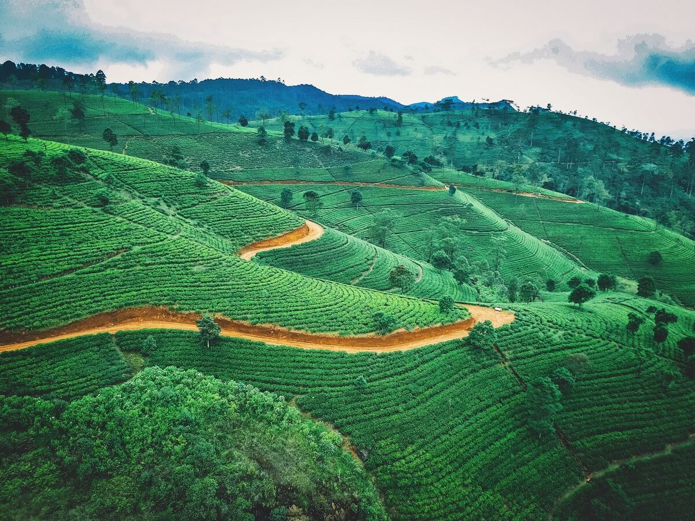

Dubai
Un savant mélange de charme oriental, d'authenticité et de découvertes insolites : c'est Dubaï ! Commencez par vous imprégner de l'atmosphère de cette grande ville en vous rendant dans le Vieux Dubaï. Vous traverserez les souks colorés, tous si différents les uns des autres. Ne ratez pas le souk de l'or ! Si vous êtes passionnés de cuisine, faîtes un tour du côté du souk aux épices...
Sri Lanka
Poursuivez ensuite votre périple aux Sri Lanka fabuleux concentré d'Asie, et partez à la découverte d'une île aux 1001 visages. Située au sud-est de l'Inde, le Sri Lanka est un véritable joyau aux couleurs chatoyantes. Des sites culturels tels que Kandy et Sigiriya en passant par Polonnaruwa à la région des montagnes parsemée de plantations de thé et innombrables chutes d'eau...
Poursuivez ensuite votre périple aux Maldives et appréciez votre séjour sur une île-hôtel au cœur des eaux turquoise des Maldives. Ici, place au farniente sur les longues plages de sable blanc bordées de cocotiers, le lagon à perte de vue... Enfilez vos palmes, masque et tuba et partez à la découverte des nombreux poissons qui peuplent le lagon.